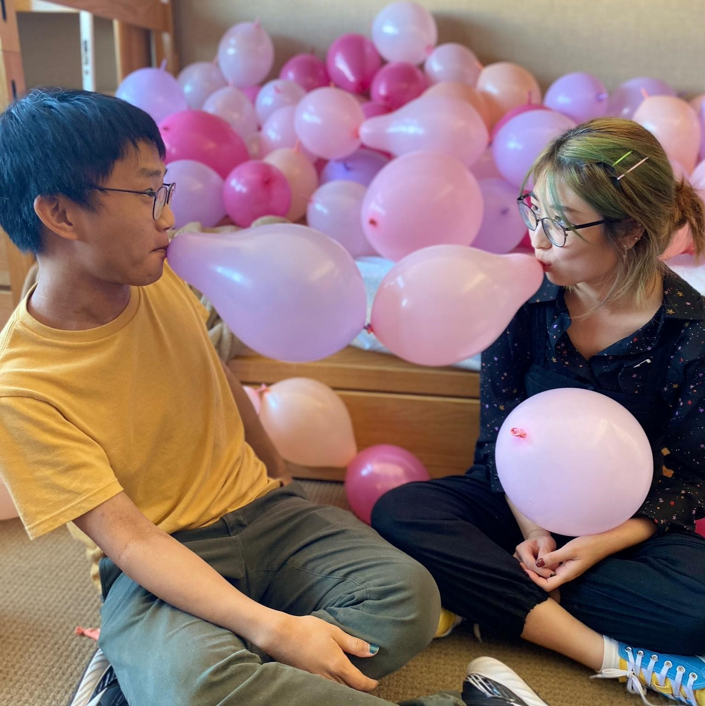

and they were roommates
a zine

the editors

editor / Austin Nguyen
Austin is dumb, cringe, deranged, and probably thinks you’re cute. He can’t stop telling people about Crash (the Cronenberg film) and has the second-best music taste in the world.
editor / Helia Woo
Helia changes interests and life goals every two weeks and feels like she is being left behind. She has the greatest music taste in the world.
some thanks
to all of our artists, to Einar Balan for helping with the website and taking the photo above, and Neelanjana Banerjee from Kaya Press for the opportunity to publish this zine.